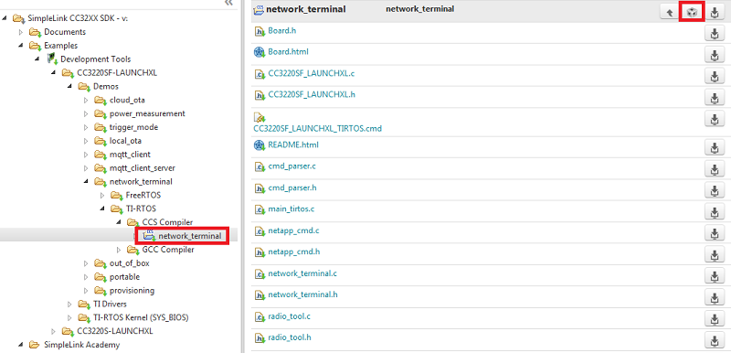

Introduction
In this lab, we will use the Network Terminal example in the SimpleLink™ Wi-Fi® CC3220 Software Development Kit as a tool to learn the flow of a basic Wi-Fi application before we dig into the code. The Network Terminal example demonstrates the various range of networking capabilities which the SimpleLink Wi-Fi CC3220/CC3120 device family provides.
The purpose of this lab is to familiarize users with Wi-Fi and tools such as Code Composer Studio, by importing existing examples into the IDE and utilizing the debugger. The lab contains several tasks:
Task 1: Building and loading the Network terminal example
Task 2: Get familiar with the Network Terminal commands
Task 3: Use commands to demonstrate basic Wi-Fi applications
Prerequisites
Recommended Reading
Software
- Code Composer Studio v7.4 or later
- Must have SimpleLink CC3xxx Wireless MCU support
- Make sure that CCS is using the latest updates: Help → Check for Updates
- CC3220 SDK v1.60.00.04 or later
- UniFlash v4.2.1.15 or later.
- Terminal emulator program such as TeraTerm or PuTTY
Hardware
- 2x CC3220S or CC3220SF LaunchPads (CC3220S-LAUNCHXL or CC3220SF-LAUNCHXL)
- 2x Micro-USB cable (included with LaunchPad/BoosterPack)
- 802.11b/g/n (2.4-GHz) Wireless Access Point (AP)
Note
Some exercises in this lab require two CC3220 LaunchPads. A subset can be completed with one LaunchPad. This lab can also be performed with two MSP432 LaunchPads plus CC3120 BoosterPacks or a combination of these.
Task 1: Building and loading the Network Terminal example
- In CCS, open the TI Resource Explorer (View → Resource Explorer)
Expand the folders as shown to select the
network_terminalexample, then click the Import to IDE icon at the top-right- Be sure you select your desired project "flavor" (CC3220S-LAUNCHXL, CC3220SF-LAUNCHXL, TI-RTOS, Free-RTOS, CCS, GCC, etc.)
We will be using the TI-RTOS CCS example for this lab:
network_terminal_CC3220SF_LAUNCHXL_tirtos_ccsCC3220S LaunchPad
If you are using a CC3220S LaunchPad, assume all given folder and code instructions can be changed from
CC3220SFtoCC3220S. For example, here you should import thenetwork_terminal_CC3220S_LAUNCHXL_tirtos_ccsexample.
Build the project by selecting Build Project from the Project menu or right-clicking the name of the project. It may take a couple minutes to build.
You'll need two devices for some of the lab exercises, so you can grab a partner with a LaunchPad or run both terminals yourself.
If you're working with a partner:
Using CCS Debugger: Start a Debug session by clicking the green bug in the top menu. Your CC3220 LaunchPad will need to be plugged in.
If you're flying solo:
Flash using UniFlash ImageCreator: Flash the built MCU image using UniFlash ImageCreator. For step-by-step instructions, see the SimpleLink Wi-Fi CC3220 Getting Started Guide.
Open a UART terminal (or two) on your device's COM port. We want to use the XSD110 Class Application/User UART port with the following parameters:
UART Configuration
Baud rate: 115200
Data: 8 bit
Parity: None
Stop: 1 bit
Flow control: NoneIf you are using the CCS debugger, click the green arrow in the top menu to start executing your code. If you have flashed the application to the LaunchPads, reset the boards to start executing your code.
Task 2: Get familiar with the Network Terminal commands
For simplicity, we divide the application's functionality into four different silos. Each silo contains several commands accessible by the user via command line interface.
| Silo | Description |
|---|---|
| WLAN | Contains link layer functions like scan, connect, etc. |
| Socket | Shows variety of socket API and responsible for sending and receiving data. |
| NetApp | Demonstrates the usage of networking applications. |
| Transceiver | Gives the user a direct interface to the NWP radio for RF tests, raw sockets (L1) and more. |
Available commands
You can type help into the terminal at any time to see a complete list of
available commands.
WLAN commands
scan: Retrieves scan results from network processor’s (NWP) scan cachesetpolicy: Defines the device’s scan behavior and starts background scanswlanconnect: Connects device to an APwlandisconnect: Disconnect from APwlan_ap_start: Configures the device to operate in AP modewlan_ap_stop: Set device in Station modecreatefilter: Creates an RX filter. RX filters are a set of rules and actions imposed on each packet received from the airenablefilter: Enables all defined filtersdisablefilter: Disables all defined filtersdeletefilter: Deletes all defined filtersenablewowlan: Defines a pattern-based filter, then sends host MCU to Low Power Deep Sleep (LPDS). Once the pattern filter triggers, the NWP would wake the host MCU from LPDS using host IRQ as a wake up source.p2pstart: Sets the NWP in discoverable Peer to Peer mode and connects to another visible P2P device
Socket commands
send: Demonstrates opening a TCP or UDP socket, sending data in packets, and closing socketrecv: Demonstrates opening a listening socket, receiving data in packets, and closing socket
NetApp commands
ping: Pings specific host name or IP, and prints statistics to terminalmdnsadvertise: Advertises a service over mDNSmdnsquery: Runs mDNS query for services over local LAN
Transceiver commands
radiotool: Starts the Radio Tool. This allows users to run several radio-related tests for RX and TX operations
Learn more about the commands
You can learn more about any command and see an example of usage by typing
[command] -help into the terminal.
Task 3: Use commands to demonstrate basic Wi-Fi applications
In these exercises, you can grab a partner or flash the same application to both LaunchPads using UniFlash ImageCreator. We will refer to the partners or devices as User 1 and 2.
Backspaces
This terminal application does not support backspaces. If you mistype a command, you will have to retry it.
Exercise 1
User 1: Set up your device as an open Access Point. Once a Station connects
and pings you, send a number of packets to the station and wait for them to be received by the Station.
Once the Station has completed and disconnected, set the device to Station mode.
User 2: You are acting as a Station. Scan for an AP, and connect to
User 1's AP. Ping the AP, then listen for incoming packets. Once completed, disconnect from the AP.
Hint: When communicating using sockets, the server must be set up
before the client.
User 1: wlan_ap_start -s "cc3220-demo" -t OPEN
User 2: scan -n 20
User 2: wlanconnect -s "cc3220-demo" -t OPEN
User 2: ping -h <server IP address>
User 1: send -s -p 5001
User 2: recv -c <server IP address> -p 5001
User 2: wlandisconnect
User 1: wlan_ap_stop
Congratulations! You just set up your first Wi-Fi Access Point and communicated with a Station.
Exercise 2
Try the same exercise as above, but make User 1's AP a secured network!
User 1: wlan_ap_start -s "cc3220-demo" -t WPA/WPA2 -p "password"
User 2: scan -n 20
User 2: wlanconnect -s "cc3220-demo" -t WPA/WPA2 -p "password"
User 2: ping -h <server IP address>
User 1: send -s -p 5001
User 2: recv -c <server IP address> -p 5001
User 2: wlandisconnect
User 1: wlan_ap_stop
Exercise 3
As a station, connect to an AP with internet access (a hotspot or router, for example). Ping a popular website, such as google.com or ti.com. Send 5 Echo-request packets with a 2 second delay interval.
scan -n 20
wlanconnect -s "cc3220-demo" -t WPA/WPA2 -p "password"
ping -h www.ti.com -c 5 -i 2
Use your own AP's SSID and password in the wlanconnect command
Exercise 4
Start the Radio tool by calling the radiotool command and run the RX task on
any channel. RX testing is used for gathering Wi-Fi statistics for a specified channel.
Take a look at the RX statistics breaking down the traffic the SimpleLink device sees broadcasting on the specific channel (example below). This traffic comes from broadcasting Wi-Fi networks in the area. The RSSI (Received Signal Strength Indicator) histogram shows the power present in a received radio signal, and the rate histogram shows the data rate in Mbps.
For more details on the Network Terminal radio tool, see the application README.
*********************************Rx Statistics**********************************
Received Packets: 20266
Average RSSI for management: -74 Average RSSI for other packets: -83
----------------------- RSSI Histogram -----------------------
-40dBm to -87dBm (below and above RSSI will appear in the first and last cells)
10 20 30 40 50 60 70 80 90 100
|----+----+----+----+----+----+----+----+----+----|
-40dBm (0.06%)
|----+----+----+----+----+----+----+----+----+----|
-49dBm (1.59%)
|----+----+----+----+----+----+----+----+----+----|
-58dBm (0.52%)
|----+----+----+----+----+----+----+----+----+----|
-68dBm*************** (30.60%)
|----+----+----+----+----+----+----+----+----+----|
-77dBm*********************** (46.09%)
|----+----+----+----+----+----+----+----+----+----|
-87dBm********** (21.14%)
|----+----+----+----+----+----+----+----+----+----|
10 20 30 40 50 60 70 80 90 100
----------------------- Rate Histogram -----------------------
10 20 30 40 50 60 70 80 90 100
|----+----+----+----+----+----+----+----+----+----|
0 * (3.09%)
|----+----+----+----+----+----+----+----+----+----|
1 (0.03%)
|----+----+----+----+----+----+----+----+----+----|
2 (0.03%)
|----+----+----+----+----+----+----+----+----+----|
3 (0.03%)
|----+----+----+----+----+----+----+----+----+----|
4 ********************************************** (93.70%)
|----+----+----+----+----+----+----+----+----+----|
5 (0.86%)
|----+----+----+----+----+----+----+----+----+----|
6 (0.03%)
|----+----+----+----+----+----+----+----+----+----|
7 (0.06%)
|----+----+----+----+----+----+----+----+----+----|
8 * (2.13%)
|----+----+----+----+----+----+----+----+----+----|
9 (0.00%)
|----+----+----+----+----+----+----+----+----+----|
10 (0.00%)
|----+----+----+----+----+----+----+----+----+----|
11 (0.00%)
|----+----+----+----+----+----+----+----+----+----|
12 (0.04%)
|----+----+----+----+----+----+----+----+----+----|
13 (0.00%)
|----+----+----+----+----+----+----+----+----+----|
14 (0.00%)
|----+----+----+----+----+----+----+----+----+----|
15 (0.00%)
|----+----+----+----+----+----+----+----+----+----|
16 (0.00%)
|----+----+----+----+----+----+----+----+----+----|
17 (0.00%)
|----+----+----+----+----+----+----+----+----+----|
18 (0.00%)
|----+----+----+----+----+----+----+----+----+----|
19 (0.00%)
|----+----+----+----+----+----+----+----+----+----|
10 20 30 40 50 60 70 80 90 100
The data was sampled during 97337mSec
*******************************End Rx Statistics********************************
Technical support
For any questions you might have, please search on the TI SimpleLink Wi-Fi E2E Forum.
This work is licensed under a Creative Commons Attribution-NonCommercial-NoDerivatives 4.0 International License.